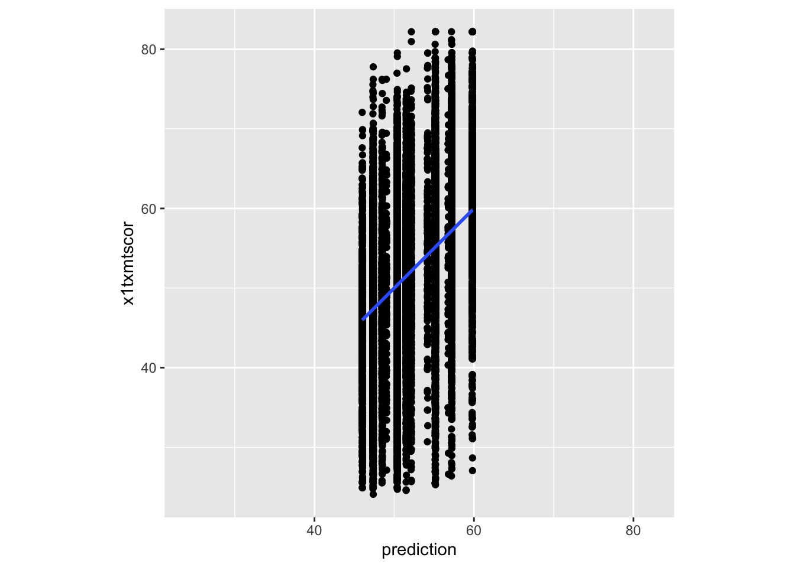
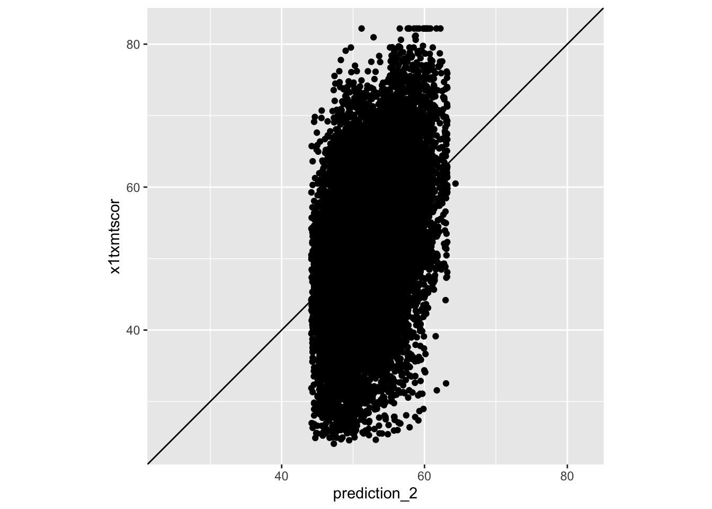

install.packages(c("tidymodels", "estimatr", "stargazer"))Bringing It All Together feat. Basic Models
- We are going to use (the tiniest portion of) our final new package today
tidymodels
- First off, let me say I am not a stats professor nor is this not a stats lesson
- Some of you have taken years of stats classes, while others are yet to take any.
- The purpose of this lesson is meant to focus how everything we have learned this semester comes together when we begin to work with some simple models
- That said, it may still be a lot of information for those less familiar with stats.
- Fear not, there is no expectation to use of any this in your final assignment, nor is there an assignment for this lesson (optional final project drafts are due Sunday)!
- If this lesson starts to go beyond your comfort level, that’s completely fine! Try your best to follow along, and maybe revisit this lesson once you’re a little further along your stats journey
Data Preparation
- Before we can run any kind of models, we need to make sure our data is prepared
- This involves using skills from our data wrangling lessons such as
- Data Wrangling I
- Handling missing data
- Making sure our data is the right format (
numeric,factor,character, etc.) - Performing basic calculations (e.g., percentages, differences, etc.)
- Data Wrangling II
- Joining multiple data sets together
- Pivoting data wider and/or longer
- Data Wrangling III
- Cleaning up text data
- Transforming dates into
- Data Wrangling IV
- Performing any of the above tasks
across()multiple columns coalesce()-ing multiple columns into one variable
- Performing any of the above tasks
- Data Wrangling I
- For the purpose of today’s lesson, we are going to focus on two of these tasks, dealing with missing data, and making sure our data is in the right format
Handling Missing Data
When modeling, by default, R will simply drop any rows that have an
NAin any variable you are modeling on (this is a little different to the cautious R we ran into in Data Wrangling I)- In real world applications, you need to think carefully about how you handle these…
- Should I impute the missing data? If so, using what method?
- Should I use this variable at all if it’s missing for a bunch of observations?
- For this lesson, however, we are just going to drop
NAvalues so we can focus on the main content
- In real world applications, you need to think carefully about how you handle these…
The below code uses the combines the logic we use for making
NAs in Data Wrangling I with the ability to work across multiple columns in Data Wrangling IV- First, we read our data and
select()the columns we want to use
- First, we read our data and
data <- read_csv("data/hsls-small.csv") |>
select(stu_id, x1sex, x1race, x1txmtscor, x1paredu, x1ses, x1poverty185, x1paredexpct)Rows: 23503 Columns: 16
── Column specification ────────────────────────────────────────────────────────
Delimiter: ","
dbl (16): stu_id, x1sex, x1race, x1stdob, x1txmtscor, x1paredu, x1hhnumber, ...
ℹ Use `spec()` to retrieve the full column specification for this data.
ℹ Specify the column types or set `show_col_types = FALSE` to quiet this message.- Second we use a combination of `!,` `filter(),` and `if_any()` to say, to say
- "If a row..."
- "has a -8 or -9"
- `.fns = ~ . %in% c(-8, -9)`
- "in any columns"
- `.cols = everything()`
- "do NOT keep it"
- `filter(!)`data <- data |>
filter(! if_any(.cols = everything(),
.fns = ~ . %in% c(-8, -9)))Making Sure Our Data is the Right Format
In our Data Viz I and Data Viz II lessons, we saw that for R to accurately plot categorical variables, we had to convert them into
factor()sThe same is true for using categorical variables in models
- Those more familiar with stats may know that you have to “dummy code” categorical variables as 0 and 1 with one category serving as the “reference level” and all other categories getting their own binary variable
The wonderful thing is that R handles that all for us if we tell it to treat the variable as a
factor()
The below code combines the logic of turning variables into a
factor()from Data Viz I with working across multiple columns for Data Wrangling IV to sat“Modify”
mutate()
“Each of these columns”
across(.cols = c(stu_id, x1sex, x1race, x1paredu, x1poverty185)
“Into a factor”
.fns = ~ factor(.)
data <- data |>
mutate(across(.cols = c(stu_id, x1sex, x1race, x1paredu, x1poverty185),
.fns = ~ factor(.)))With that, our data is ready for some basic analysis!
- Note: In most real-world projects your data preparation will be much more thorough, usually taking up the vast majority of the lines of code in your entire project, this is just the bare minimum to have to models run
t-tests with t.test()
- One of the first inferential statistical tests you will have learned (or will learn) is the t-test
- For those unfamiliar, the basic concept of a t-test if variance between two groups (i.e., the difference between treatment and control) is greater than the variance within those groups (i.e., random variance between people within the same group)
- If that between-group-variance is great enough compared to the within-group-variance, the t-test will be “statistically significant”
- This means we are (most often) 95% confident that the there is a genuine difference between the groups
- If that between-group-variance is great enough compared to the within-group-variance, the t-test will be “statistically significant”
- There are also a handful of statistical assumptions we have to satisfy, which are beyond our scope here, but hopefully the general concept will hope those of you yet to take your stats foundations follow along
- For those unfamiliar, the basic concept of a t-test if variance between two groups (i.e., the difference between treatment and control) is greater than the variance within those groups (i.e., random variance between people within the same group)
t.test(x1txmtscor ~ x1sex, data = data)
Welch Two Sample t-test
data: x1txmtscor by x1sex
t = 0.38555, df = 16321, p-value = 0.6998
alternative hypothesis: true difference in means between group 1 and group 2 is not equal to 0
95 percent confidence interval:
-0.2455338 0.3657777
sample estimates:
mean in group 1 mean in group 2
52.14309 52.08297 - Luckily, the code for
t.test()is actually very simple (as is the case for regression too)- The first argument is a
forumla, which for a t-test is justoutcome ~ groupwhere group must only have 2 levels- In this case, we are looking at math score as our outcome and sex as our group
- The second argument is
data =which we supply our prepared data frame- Note: the pipe
|>doesn’t play as nicely with models as it does other commands it’s usually easier to just specifydata =in a new line (don’t pipe anything in)
- Note: the pipe
- This code simply prints out our
t.test()result- As our p-value is above 0.05, our result is not significant
- This indicates there is not a significant difference between male and female math scores in our sample
- As our p-value is above 0.05, our result is not significant
- The first argument is a
Regression with lm()
The problem with t-tests for our research, is that they don’t provide any ability to control for external variables
- They work great in experimental setting with random-treatment-assignment, but in the messy world of educational research, that’s rarely what we have
What we far more commonly use is a regression (or more advanced methods that build off regression) which allows use to control for other variables
The basic premise of regression very much builds off the logic of t-tests, testing if the variance associated with our treatment variable is great enough compared to a) residual/random variance and b) variance associated with our control variables, to say with confidence that there is a significant difference associated with our treatment
Overall, this looks relatively similar to our code above, with three main differences
- We use
lm()(which stands for linear model) instead oft.test() - Instead of our formula just being
x1txmtscor ~ x1sexwe have added+ x1poverty185 + x1pareduto “control” for these variables - We assigned
<-ourlm()results to an object rather than just spitting them out
- That’s because the
summary()function is much more useful forlm()objects, plus, we are going to explore thelm()object more in the next steps
- We use
regression <- lm(x1txmtscor ~ x1sex + x1poverty185 + x1paredu, data = data)
summary(regression)
Call:
lm(formula = x1txmtscor ~ x1sex + x1poverty185 + x1paredu, data = data)
Residuals:
Min 1Q Median 3Q Max
-32.748 -5.715 0.160 6.136 30.413
Coefficients:
Estimate Std. Error t value Pr(>|t|)
(Intercept) 49.0485 0.3379 145.139 < 2e-16 ***
x1sex2 -0.0412 0.1429 -0.288 0.773
x1poverty1851 -3.0224 0.1729 -17.483 < 2e-16 ***
x1paredu2 1.3419 0.3234 4.149 3.36e-05 ***
x1paredu3 2.4834 0.3584 6.929 4.38e-12 ***
x1paredu4 6.1227 0.3507 17.460 < 2e-16 ***
x1paredu5 8.1726 0.3814 21.426 < 2e-16 ***
x1paredu7 10.7669 0.4294 25.074 < 2e-16 ***
---
Signif. codes: 0 '***' 0.001 '**' 0.01 '*' 0.05 '.' 0.1 ' ' 1
Residual standard error: 9.161 on 16421 degrees of freedom
Multiple R-squared: 0.1605, Adjusted R-squared: 0.1601
F-statistic: 448.4 on 7 and 16421 DF, p-value: < 2.2e-16- Our results show that, sex still had no significant association with math scores, but, our control variables of poverty and parental education seem to have some very strong associations
Quick Question
- You may notice we actually have more variables in the regression table than we put in, why? What do they represent?
Creating Pretty Regression Output Tables
- Running regressions in R is all well and good, but the output you see here isn’t exactly “publication ready”
- We saw in Intro to Quarto lesson that we can turn data frames and summary tables into pretty tables using
kable()- Now, we could do the same thing with regression tables, create a nice
tibbleordataframecontaining the information we want to display, then usekable()to turn that into a table- You could (and I know Dr. Skinner does) create your own
function()that creates a custom regression output table
- You could (and I know Dr. Skinner does) create your own
- However, for simplicity and consistency, today we are going to us a very popular package that creates these tables in a single line
stargazer
- Now, we could do the same thing with regression tables, create a nice
stargazer(regression, type = "text")
===============================================
Dependent variable:
---------------------------
x1txmtscor
-----------------------------------------------
x1sex2 -0.041
(0.143)
x1poverty1851 -3.022***
(0.173)
x1paredu2 1.342***
(0.323)
x1paredu3 2.483***
(0.358)
x1paredu4 6.123***
(0.351)
x1paredu5 8.173***
(0.381)
x1paredu7 10.767***
(0.429)
Constant 49.049***
(0.338)
-----------------------------------------------
Observations 16,429
R2 0.160
Adjusted R2 0.160
Residual Std. Error 9.161 (df = 16421)
F Statistic 448.368*** (df = 7; 16421)
===============================================
Note: *p<0.1; **p<0.05; ***p<0.01Predictions with lm()
- When you fit a regression model in R, there is a lot more saved than you see with
summary() - Since we have our
lm()object saved aslm_sex, let’s start by taking a look inside it by clicking on the object in our environment (top right) panel - Confusing, right?
- Most statistical models look something like this, it’s basically a collection of lists and tables containing different information about the model
- There are functions such as
summary()that are great at pulling out the most commonly needed information without having to go manually digging through the model object, but sometimes, it can be useful to know it’s there - Another great function is
predict()which extracts estimated values of the outcome variable based on the predictor variables (some other models usefitted()for the same purpose)- For those more familiar with stats, you’ll know predicted values are often compared against the true values to see how strong the model is
- To start, let’s save a full set of predictions to a new columns in our data frame
data <- data |>
mutate(prediction = predict(regression))
data# A tibble: 16,429 × 9
stu_id x1sex x1race x1txmtscor x1paredu x1ses x1poverty185 x1paredexpct
<fct> <fct> <fct> <dbl> <fct> <dbl> <fct> <dbl>
1 10001 1 8 59.4 5 1.56 0 6
2 10002 2 8 47.7 3 -0.370 1 6
3 10003 2 3 64.2 7 1.27 0 10
4 10004 2 8 49.3 4 0.550 0 10
5 10005 1 8 62.6 4 0.150 0 10
6 10006 2 8 58.1 3 1.06 0 8
7 10007 2 8 49.5 2 -0.43 0 11
8 10008 1 8 54.6 7 1.51 0 6
9 10009 1 8 53.2 2 -0.310 0 11
10 10010 2 8 63.8 3 0.0451 0 6
# ℹ 16,419 more rows
# ℹ 1 more variable: prediction <dbl>- Next, we can compare these to our actual results using a simple plot (no formatting) from Data Viz I
- The only new thing we add here is
coord_obs_pred()which is from thetidymodelspackage- This fixes the axes so that the predictions and observed values are plotted on the same scale
- The only new thing we add here is
Quick Excercise
- Try removing the final line
coord_obs_pred()and see what happens. Which plot do you think is better?
ggplot(data,
aes(x = prediction,
y = x1txmtscor)) +
geom_point() +
geom_smooth(method = "lm") +
coord_obs_pred()`geom_smooth()` using formula = 'y ~ x'
(Easier) Quick Question
- What do we think about our model? Does it look like it’s doing a great job of predicting? Why/why not?
(Harder) Quick Question
- You’ll notice our plot looks kind of clumped together, why do you think that it? What about the model would lead to that?
(Not So) Quick (Group) Excercise
- Given what we just discussed, can we change one of the variables we are using in the model to make it less “clumpy” but caputre the same information?
`geom_smooth()` using formula = 'y ~ x'
Quick Question
- Does that look better? What else is odd about our predictions?
- We can also use
predict()to estimate potential outcome values for new students who don’t have the outcome for - This is a common way you evaluate machine learning models
- If you think you’re model is a really good predictor (which ours is not) you may feel comfortable using something like this to help your office predict student outcomes/identify students in need of additional help
- To demonstrate this, we are first going to split out 10% of our data using
slice_sample()and drop the math score from it
data_outcome_unknown <- data |>
slice_sample(prop = 0.1) |>
select(-x1txmtscor)- Then, we can use
anti_join()which is basically the opposite of the joins we used in Data Wrangling II- It looks for every row in x that isn’t in y and keeps those
data_outcome_known <- anti_join(x = data, y = data_outcome_unknown, by = "stu_id")- Now, we can fit one more
lm()using our data we “know” the outcome for
regression_3 <- lm(x1txmtscor ~ x1sex + x1ses + x1paredu, data = data_outcome_known)- Finally, we can
predict()outcomes for the data we “don’t know” the outcome for- We add the
regression_3we just fitted as the model, same as before - But we also add
newdata = data_outcome_unknownto say predict the outcome for this new data, instead of extract the predictions the model originally made
- We add the
data_outcome_unknown <- data_outcome_unknown |>
mutate(prediction_3 = predict(regression_3, newdata = data_outcome_unknown))- Lastly, let’s see how similar our predictions we made using our model without the outcome were to those made when the outcome was known for everyone using
cor()to get the correlation
cor(data_outcome_unknown$prediction_2, data_outcome_unknown$prediction_3)[1] 0.9999769- Pretty close!
Checking Residuals
- Many of the assumptions relating to regression are tested by looking at the residuals
- We aren’t going to go over those assumptions, again, this is not a stats class
- But it might be useful to see how to get them out of a model object
- Let’s start by viewing the lm object again (environment, top right panel), then clicking on the little white box on the right hand side of the screen for the row “residuals”
- That is a magic tip, if you ever want to get something specific out of a model object, often they’ll be something you can click on to generate the code needed to access it in the console
- For residuals, it is
regression_2[["residuals"]]
- For residuals, it is
data <- data |>
mutate(residual = regression_2[["residuals"]])- Now, again, not to get too deep into assumptions, but one of the key things to check is that your residuals have a normal distribution
- So let’s revisit some Data Visualization I content and make a simple
ggplot()histogram to of them
- So let’s revisit some Data Visualization I content and make a simple
ggplot(data) +
geom_histogram(aes(x = residual),
color = "black",
fill = "skyblue")`stat_bin()` using `bins = 30`. Pick better value with `binwidth`.
- Wow, that is almost a perfect normal distribution!
- Bonus points: can anyone remember/think of something about the variable
x1txmtscorthat made this result quite likely? Think about what kind of score it is
- Bonus points: can anyone remember/think of something about the variable
formula() Objects
- The second from last thing is really simple, but, it can be a time & error saver if you want to get more advanced like our final step
- Above, we simply put our formula into the
t.test()orlm()commandInstead, we can actually specify it as a formula object first, then call that object, which has two advantages
- If we run multiple tests with the same formula, we only have to change it once in our code for updates
- Here, we will run both standard
lm()andlm_robust()from theestimatrpackage
- If we want to run multiple tests in a loop like below, it makes that possible too
- Above, we simply put our formula into the
- To demonstrate this, we will fit the same model using standard
lm()andlm_robust()which for those versed in stats, is one option we can use when we have a violation of heteroskedasticity
regression_formula <- formula(x1txmtscor ~ x1sex + x1ses + x1paredu)
regression_4 <- lm(regression_formula, data = data)
summary(regression_4)
Call:
lm(formula = regression_formula, data = data)
Residuals:
Min 1Q Median 3Q Max
-31.781 -5.703 0.180 6.129 30.996
Coefficients:
Estimate Std. Error t value Pr(>|t|)
(Intercept) 50.82144 0.35585 142.819 < 2e-16 ***
x1sex2 -0.03767 0.14199 -0.265 0.791
x1ses 3.77674 0.16341 23.112 < 2e-16 ***
x1paredu2 -0.04729 0.33298 -0.142 0.887
x1paredu3 -0.15566 0.39027 -0.399 0.690
x1paredu4 2.04812 0.42368 4.834 1.35e-06 ***
x1paredu5 2.57885 0.49454 5.215 1.86e-07 ***
x1paredu7 2.67655 0.60923 4.393 1.12e-05 ***
---
Signif. codes: 0 '***' 0.001 '**' 0.01 '*' 0.05 '.' 0.1 ' ' 1
Residual standard error: 9.099 on 16421 degrees of freedom
Multiple R-squared: 0.1718, Adjusted R-squared: 0.1714
F-statistic: 486.5 on 7 and 16421 DF, p-value: < 2.2e-16regression_robust <- lm_robust(regression_formula, data = data, se_type = "stata")
summary(regression_robust)
Call:
lm_robust(formula = regression_formula, data = data, se_type = "stata")
Standard error type: HC1
Coefficients:
Estimate Std. Error t value Pr(>|t|) CI Lower CI Upper DF
(Intercept) 50.82144 0.3443 147.6058 0.000e+00 50.1466 51.4963 16421
x1sex2 -0.03767 0.1420 -0.2653 7.908e-01 -0.3160 0.2407 16421
x1ses 3.77674 0.1651 22.8741 5.068e-114 3.4531 4.1004 16421
x1paredu2 -0.04729 0.3196 -0.1479 8.824e-01 -0.6738 0.5792 16421
x1paredu3 -0.15566 0.3767 -0.4132 6.795e-01 -0.8941 0.5828 16421
x1paredu4 2.04812 0.4167 4.9150 8.963e-07 1.2313 2.8649 16421
x1paredu5 2.57885 0.4891 5.2725 1.363e-07 1.6201 3.5376 16421
x1paredu7 2.67655 0.6206 4.3130 1.620e-05 1.4601 3.8929 16421
Multiple R-squared: 0.1718 , Adjusted R-squared: 0.1714
F-statistic: 490.1 on 7 and 16421 DF, p-value: < 2.2e-16Modeling Programatically with Loops
- Finally, we can also bring in content from Functions & Loops and fit regression models using loops
- This is kind of thing you might want to do if you are testing the same model on a set of outcomes
Quick Question
- Thinking back to that lesson, why might we want to go through the hassle of fitting regressions using loops? What are the advantages of using loops vs coding it all out separately?
- For example, we might be interested in modeling both a students math score and their parental education expectation
- we make a list containing our outcome variables (x1txmtscor and x1paredexpct)
- Use a
for()loop to loop through these outcomes, whichpaste()s i (which takes on the name of each outcome variable) into the formula and then runs the model
outcomes <- c("x1txmtscor", "x1paredexpct")
for(i in outcomes) {
print(i)
loop_formula <- formula(paste0(i, "~ x1sex + x1ses + x1paredu"))
loop_lm <- lm(loop_formula, data = data)
print(summary(loop_lm))
}[1] "x1txmtscor"
Call:
lm(formula = loop_formula, data = data)
Residuals:
Min 1Q Median 3Q Max
-31.781 -5.703 0.180 6.129 30.996
Coefficients:
Estimate Std. Error t value Pr(>|t|)
(Intercept) 50.82144 0.35585 142.819 < 2e-16 ***
x1sex2 -0.03767 0.14199 -0.265 0.791
x1ses 3.77674 0.16341 23.112 < 2e-16 ***
x1paredu2 -0.04729 0.33298 -0.142 0.887
x1paredu3 -0.15566 0.39027 -0.399 0.690
x1paredu4 2.04812 0.42368 4.834 1.35e-06 ***
x1paredu5 2.57885 0.49454 5.215 1.86e-07 ***
x1paredu7 2.67655 0.60923 4.393 1.12e-05 ***
---
Signif. codes: 0 '***' 0.001 '**' 0.01 '*' 0.05 '.' 0.1 ' ' 1
Residual standard error: 9.099 on 16421 degrees of freedom
Multiple R-squared: 0.1718, Adjusted R-squared: 0.1714
F-statistic: 486.5 on 7 and 16421 DF, p-value: < 2.2e-16
[1] "x1paredexpct"
Call:
lm(formula = loop_formula, data = data)
Residuals:
Min 1Q Median 3Q Max
-7.5279 -1.6021 -0.0548 2.2533 4.6503
Coefficients:
Estimate Std. Error t value Pr(>|t|)
(Intercept) 7.17797 0.10020 71.638 < 2e-16 ***
x1sex2 0.47245 0.03998 11.817 < 2e-16 ***
x1ses 0.28497 0.04601 6.193 6.03e-10 ***
x1paredu2 -0.39488 0.09376 -4.212 2.55e-05 ***
x1paredu3 -0.28136 0.10989 -2.560 0.0105 *
x1paredu4 -0.07679 0.11930 -0.644 0.5198
x1paredu5 0.29117 0.13925 2.091 0.0365 *
x1paredu7 0.85235 0.17155 4.969 6.81e-07 ***
---
Signif. codes: 0 '***' 0.001 '**' 0.01 '*' 0.05 '.' 0.1 ' ' 1
Residual standard error: 2.562 on 16421 degrees of freedom
Multiple R-squared: 0.04934, Adjusted R-squared: 0.04894
F-statistic: 121.8 on 7 and 16421 DF, p-value: < 2.2e-16No assignment for this week, optional drafts of your reproducible report are due Sunday!